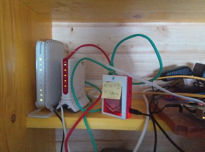

Exam (ECE/SS2022/G2): Do A Lot With Files And Directories¶
Precondition: Logged-In To Remote/Exam Computer¶
{kind=link}
Public key deployed to remote computer (see SSH: Public Key Authentication)
Logged in to remote computer
$ ssh -p 2020 firstname.lastname@jfasch.bounceme.net
Danger
The exam must be done on the remote computer
Take care to not accidentally execute the following steps on your local machine!
Create Exam Skeleton (5 Points)¶
In your home directory, create a subdirectory
exam-01.In the
~/exam-01directory, create an empty (“skeleton”) tree as follows,
$ tree ~/exam-01/
~/exam-01/
├── business-cards
├── private-place
└── public-place
Create Business Cards (10 Points)¶
In the directory ~/exam-01/business-cards, create a file
my-credentials.card that contains, line by line,
Your user name
Your user ID (
uid)The name and ID of your primary group (
gid)The names and IDs of your supplementary groups (
groups)
In the case of user joerg.faschingbauer, that file would look like
this:
$ cat ~/exam-01/business-cards/my-credentials.card
joerg.faschingbauer
1020
joerg.faschingbauer 1020
ece20 1021
Hint
See Login? What Is That? for how to find out who you are.
Hint
You use the >> operator to append a line to an existing file
(or to create that file if it doesn’t exist):
$ echo 8020 Graz >> somefile.txt
Public Place (10 Points)¶
Tune the permissions of the ~/exam-01/public-place directory in a
way that
You can
look and
cdinto itcreate files in it
remove files from it
Your fellow members of the
ece20group canlook and
cdinto itcreate files in it
remove files from it
Nobody else can do any of the above
Hint
You use the -d option (together with -l of course) to the
ls command to view the permissions of the directory itself,
not its contents.
For example, this shows the initial - not-yet-tuned - permissions of the directory:
$ pwd
/home/joerg.faschingbauer/exam-01
$ ls -ld public-place/
drwxr-xr-x 2 joerg.faschingbauer joerg.faschingbauer 4096 Mar 24 07:00 public-place/
Private Place (10 Points)¶
Tune the permissions of the ~/exam-01/private-place directory in a
way that
You can
look and
cdinto itcreate files in it
remove files from it
Nobody else can do any of the above
Make A Backup Of ~/exam-01 (15 Points)¶
Goal
Transfer what you created (i.e. the entire contents of the remote
~/exam-01directory) to your local machine.Use the
scpcommand for this taskBut read on! Do not start!!
Think
What would be the command to do this?
Note that we were extremely picky to restrict permissions in most parts of the tree. How would you preserve those valuable permissions across the remote copy?
(Hint: read the
scpmanual page, and find out about the-poption.)Create a file
backup-command.shin~/exam-01/containing that command.Make this file executable for all users, but otherwise preserve its default permissions that it had initially.
Finally, execute the
scpcommand on your local machine